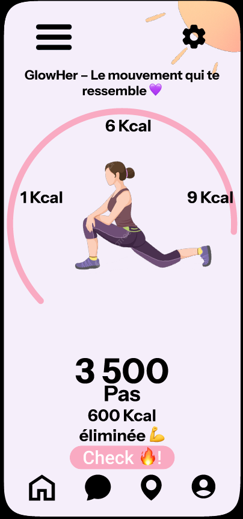

Promotion du Sport Féminin
Conception et Prototypage

Missions réalisées
Ce projet visait à encourager la pratique sportive chez les femmes. Mon rôle a été central dans la phase de conception logicielle et de design.
- Rédaction complète du cahier des charges fonctionnel.
- Création du prototype interactif haute fidélité avec Figma.
- Animation des sessions d'idéation en équipe.
Contraintes techniques
Découverte et maîtrise rapide de nouveaux outils collaboratifs :
Figma & Miro : Passage de l'idée abstraite à une interface utilisateur (UI) concrète, ergonomique et testable.
Fiche technique
Équipe : Projet académique (Groupe)
Durée : 1 mois
Figma
Miro
UI/UX Design